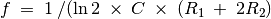
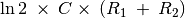

Oscillateur à IC555¶
Objectif
Câbler un circuit de multivibrateur astable à l’aide d’un IC555, mesurer la fréquence et le rapport cyclique de la sortie.


Le circuit est présenté sur la figure. La fréquence est données par . La durée HAUTE est donnée par  et la durée BASSE par .
Procédure
- Faire les connexions
- mesurer la fréquence et le rapport cyclique.
- Recommencer en changeant les valeurs de R1
Discussion
Le signal de sortie est montré sur la figure. Changer la valeur des résistances et du condensateur, puis comparer la fréquence et le rapport cyclique avec les valeurs calculées.